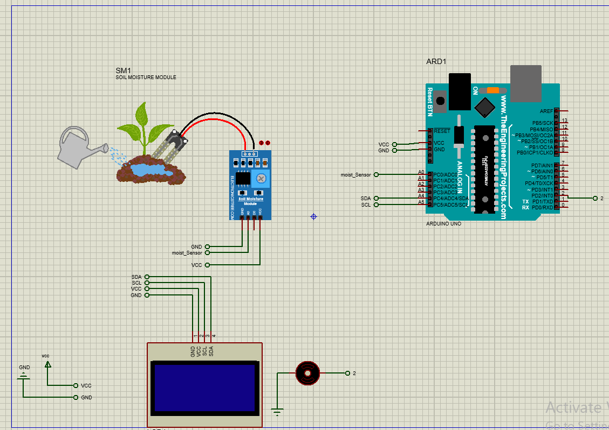
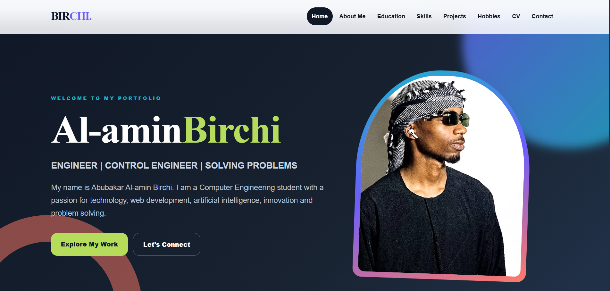
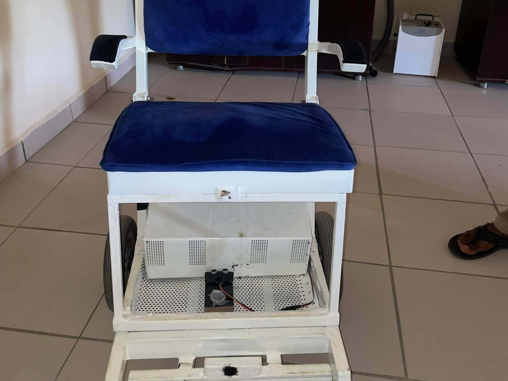

Automated Irrigation & Soil Health Monitoring
A mechatronics system that monitors soil conditions and automatically controls irrigation using sensors, Arduino, a pump and control logic.
View DetailsSELECTED WORK
A collection of engineering, AI and web development projects.
MY WORK
Click “View Details” on any project for a full description — shown in a CSS-only overlay, no JavaScript required.

A mechatronics system that monitors soil conditions and automatically controls irrigation using sensors, Arduino, a pump and control logic.
View Details
A responsive multi-page portfolio created to present my academic journey, skills, projects and professional goals.
View Details
An intelligent navigation system that uses fuzzy logic and computer vision to help a smart wheelchair detect obstacles and navigate safely in real time.
View Details